本文章简要介绍了如何在腾讯云的TKE集群中搭建Loki日志采集工具。
Loki日志系统介绍
Loki是受Prometheus启发的水平可扩展，高度可用的多租户日志聚合系统。它的设计具有很高的成本效益，并且易于操作。它不索引日志的内容，而是为每个日志流设置一组标签。
与其他日志聚合系统相比，Loki的特点
- 不对日志进行全文本索引。通过存储压缩的，非结构化的日志以及仅索引元数据，Loki更加易于操作且运行成本更低。
- 使用与Prometheus相同的标签对日志流进行索引和分组，从而使您能够使用与Prometheus相同的标签在指标和日志之间无缝切换。
- 特别适合存储Kubernetes Pod日志。诸如Pod标签之类的元数据会自动被抓取并建立索引。
- 在Grafana中具有本机支持（需要Grafana v6.0）。
基于Loki的日志记录堆栈包含3个组件：
- promtail是代理，负责收集日志并将其发送给Loki。
- loki是主服务器，负责存储日志和处理查询。
- Grafana用于查询和显示日志。
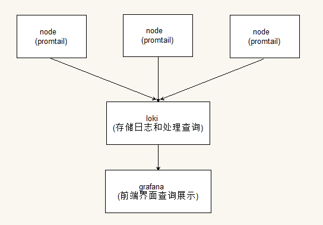
Loki其实类似于elk和prometheus的架构，部署在k8s中，通过DaemonSet的方式部署promtail用来采集节点的日志，将采集的日志数据投递到loki，最后通过grafana来进行前端的界面查询和展示。
Loki像Prometheus一样，但是对于日志：我们更喜欢基于多维标签的索引方法，并且想要一个没有依赖性的，易于操作的单二进制系统。 Loki与Prometheus的不同之处在于，它侧重于日志而不是指标，并通过推送而不是拉动交付日志。
部署Loki和grafana到k8s集群
部署loki和promtail
这里我们通过helm来部署loki和promtail到集群中，这里使用的环境是腾讯云上的托管TKE集群，在腾讯云上的容器服务有直接提供loki应用让我们直接部署到集群中，下面我们说一下部署方式
控制台部署loki应用到集群
点击腾讯云容器服务，点击应用，选择你的集群，点击新建。
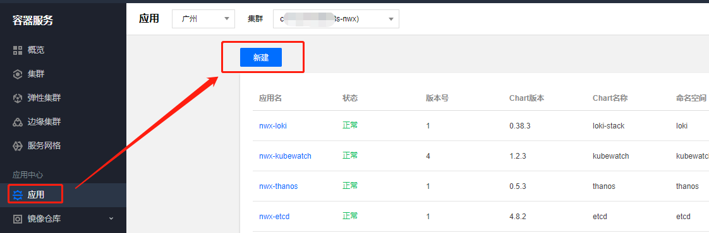
输入你的应用名和应用部署的命名空间，在日志分析中找到loki-stack，然后点击完成即可。
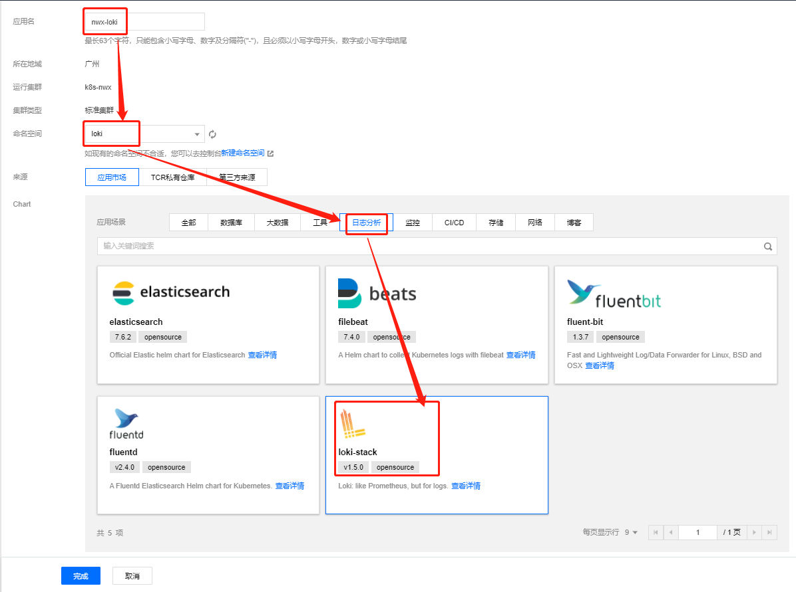
这边部署成功后可以去控制台进入loki查看应用，你会发现部署loki和对应的promtail，这些pod都正常启动，说明loki和promtail都部署成功了。
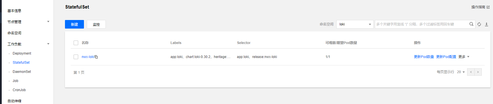
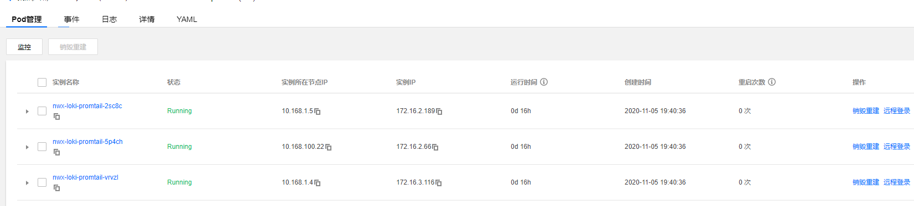
helm命令部署loki应用到集群
当然如果你习惯用helm命令操作部署也是可以的，下面讲一下helm命名的部署方式1
2
3
4
5
6
7
8//添加loki仓库
$ helm repo add loki https://grafana.github.io/charts
$ helm repo update
//采用默认配置部署
$ helm upgrade --install loki --namespace=loki --name=nwx-loki loki-stack
//部署Loki和Fluent Bit到您的集群
$ helm upgrade --install loki --namespace=loki --name=nwx-loki \
--set fluent-bit.enabled=true,promtail.enabled=false
部署grafana
部署grafana及对应的service
下面我们部署grafana作为前端界面来查询loki所采集的日志，这里在选择grafana版本需要注意，版本需要6.0以上的版本。
1 | apiVersion: apps/v1beta2 |
1 | apiVersion: v1 |
直接kubectl apply上面2个yaml文件创建grafana应用和对应的service，也可以控制台创建
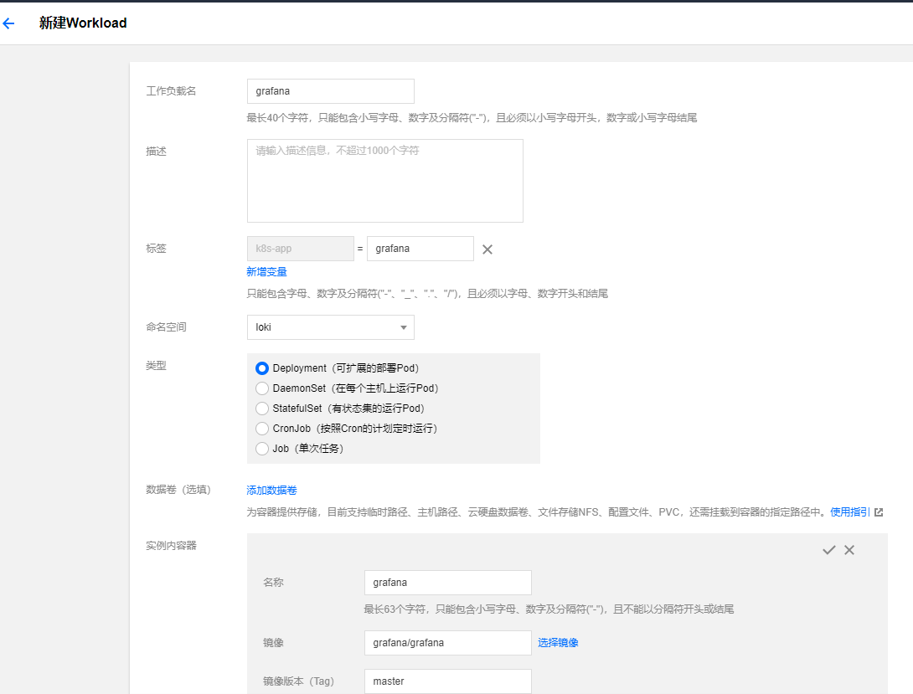
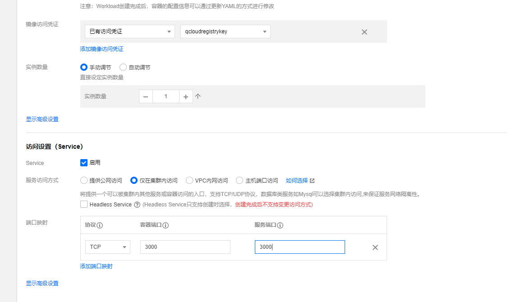
通过treafik给grafana配置域名访问
这里集群部署的treafik是2.0版本，关于treafik2.0部署可以参考 https://cloud.tencent.com/developer/article/1642306
1 |
|
直接添加一个IngressRoute就可以了，下面我们通过配置的域名看看是否可以成功。
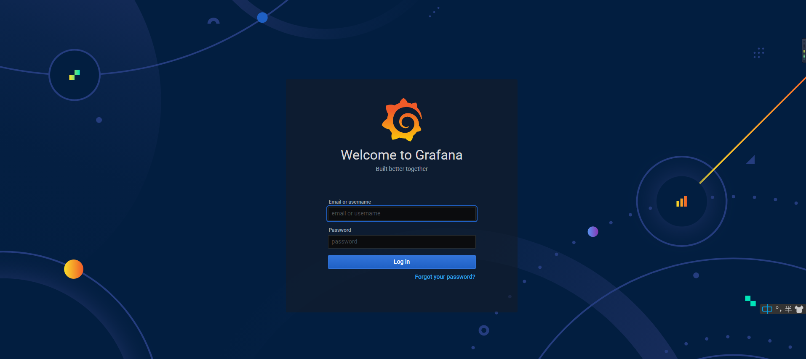
可以进入登陆界面表示部署成功。
通过grafana界面查询日志
grafana配置loki数据源
下面我们需要在grafana配置一下loki的数据源，这样我们才可以在grafana上查询loki的日志，首先我们登录grafana，初始化账号密码是admin/admin，第一次登录会要求你修改密码，登录成功后有一个grafana介绍。
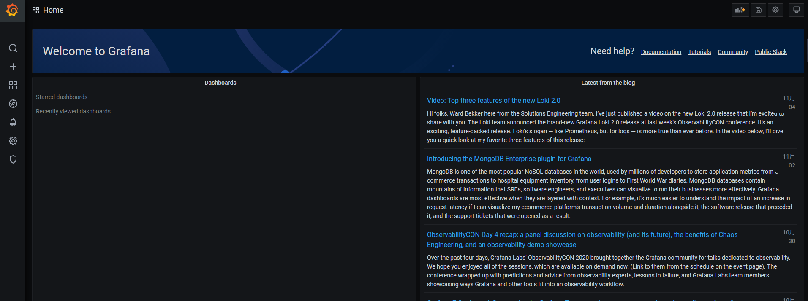
找到配置选项的Data Sources，点击添加数据源，选择loki，在loki数据源的url配置上你的service名称地址，我的service名称是nwx-loki，因此我们这里配置的是这个地址 http://nwx-loki:3100，配置好后点击测试，如果能连接成功说明添加成功。
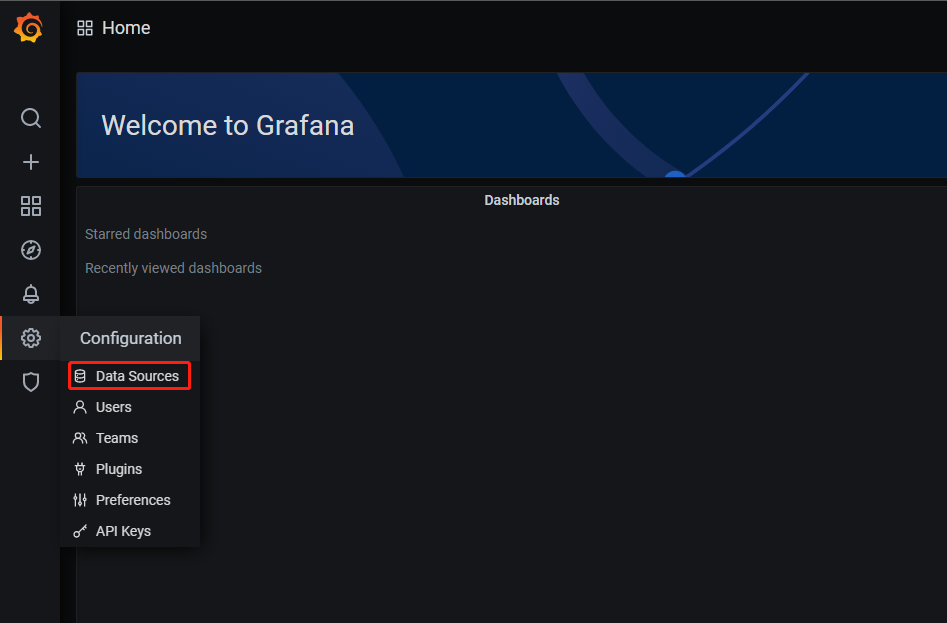
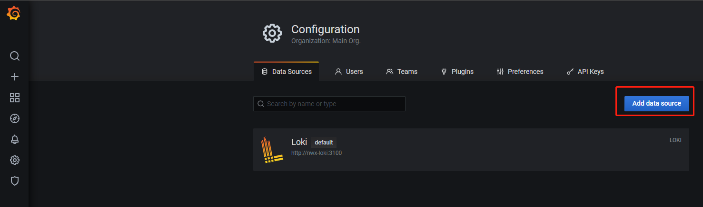
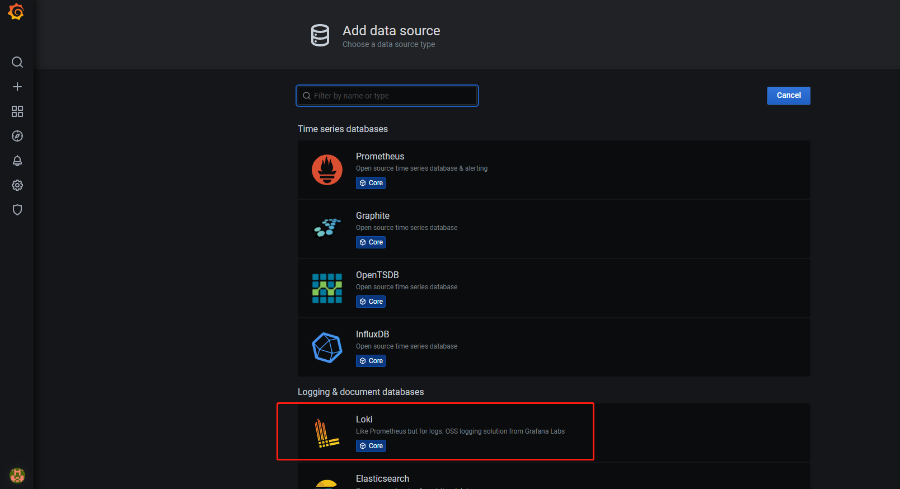
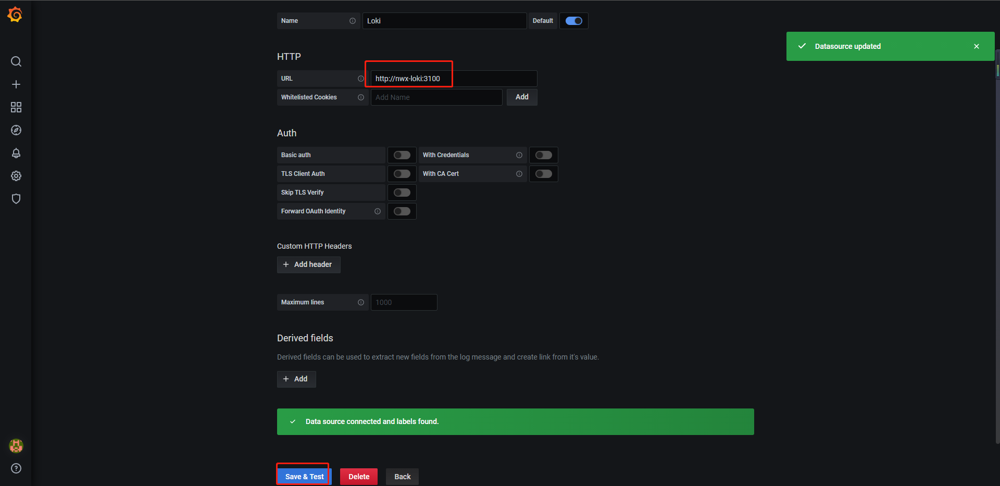
界面上查询日志
添加数据源后，点击explore可以直接进到loki的查询界面

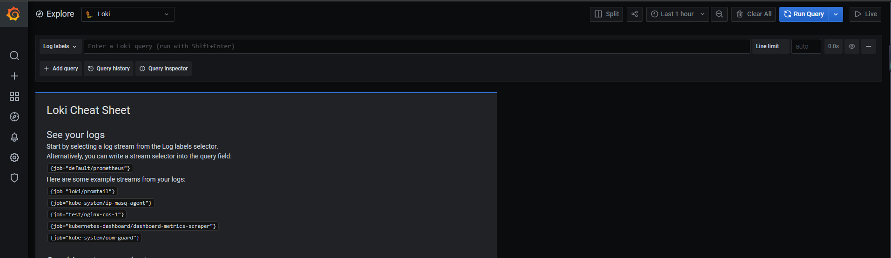
我们这边查询一下loki的日志看看，点击log label选择app中的loki就可以看到loki的业务日志
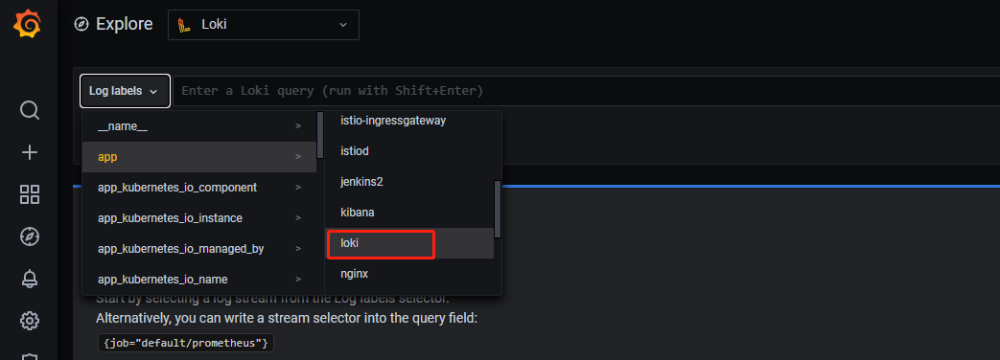
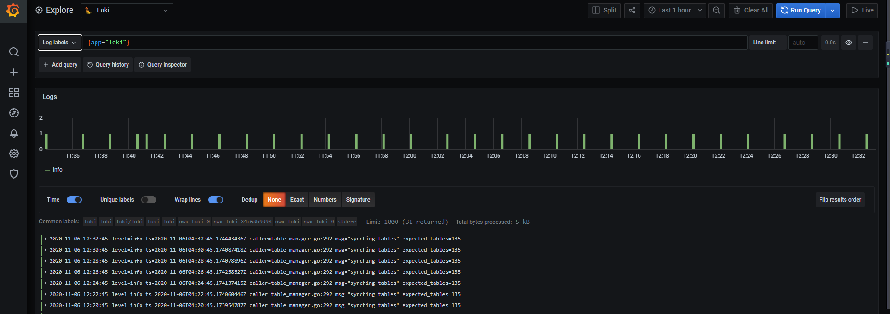
loki查询语法
下面我们简单的测试一下loki的查询语法
job日志流
1 | {job="efk/elasticsearch-master"} |
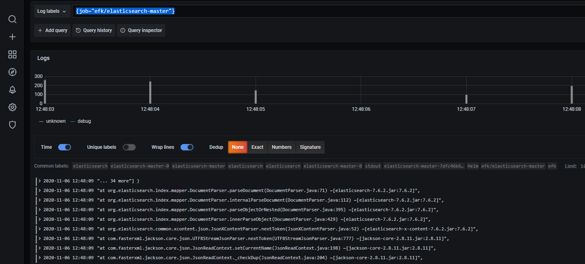
合并流选择器
1 | {app ="elasticsearch-master",namespace ="efk"} |
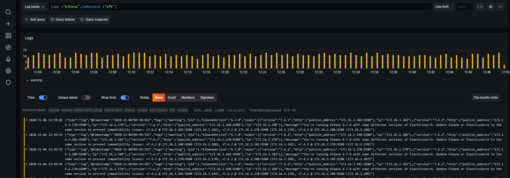
标签匹配的运算符
- =： 完全相等。
- !=： 不相等。
- =~： 正则表达式匹配。
- !~： 正则表达式不匹配。
1
{app != "kibana",namespace ="efk"}
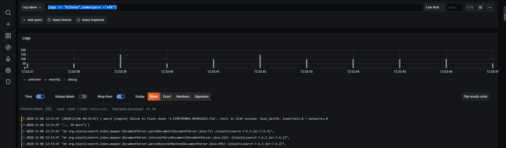
行筛选器表达式
- |=：日志行包含字符串。
- !=：日志行不包含字符串。
- |~：日志行与正则表达式匹配。
- !~：日志行与正则表达式不匹配。
1 | {app = "kibana",namespace ="efk"} |= "172.16.2.108" |
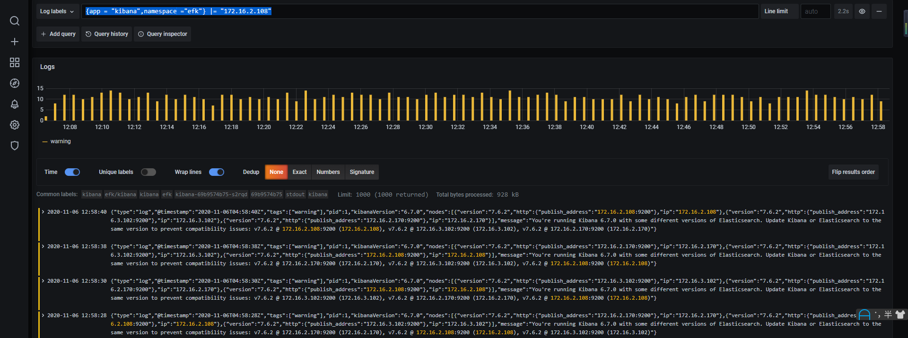
筛选器运算符可以多个并将按顺序筛选表达式 - 生成的日志行必须同时满足所有条件。1
{app = "kibana",namespace ="efk"} |= "172.16.2.108" != "04:58:40"
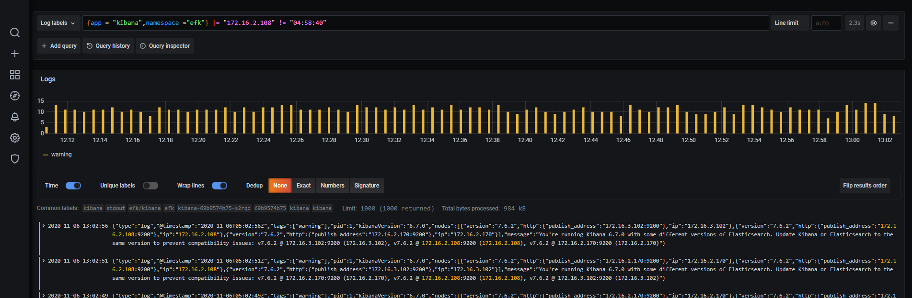
统计某一时间段的日志数
1 | count_over_time({app = "kibana",namespace ="efk" }[1m]) |
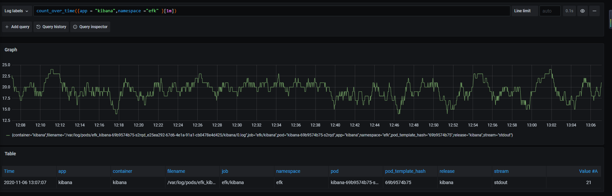
获取过去1个小时的日志计数，按级别分组
1 | sum(count_over_time({job="default/nginx"}[60m])) by (level) |
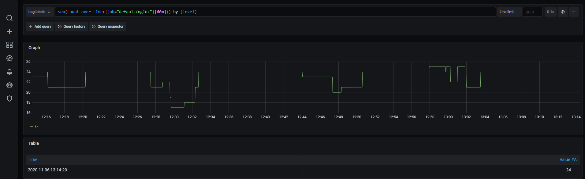
loki配备了自己的查询LogQL，详细的查询语法参考https://github.com/grafana/blob/master/docs/sources/logql/_index.md
有两种类型的 LogQL 查询：
- 日志查询返回日志行的内容。
- 指标查询扩展日志查询，并基于日志查询中的日志内容计算示例值。
logQL基本上能满足我们的日常查询需求。大家可以多多学习实际操作下。
参考链接
https://github.com/grafana/loki
https://github.com/grafana/blob/master/docs/sources/logql/_index.md

...
...
This is copyright.